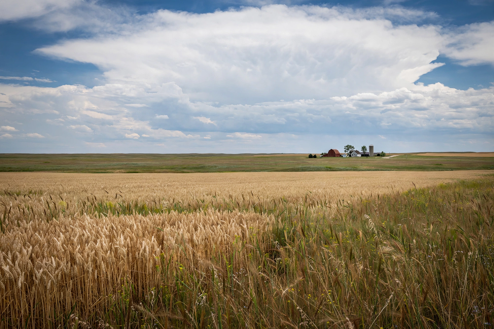

[Image placeholder: A grassland plain stretching to the horizon]A **plain** is a flat expanse of land that generally does not change much in elevation, and is primarily treeless. Plains occur as lowlands along mountain valleys or as plateaus or uplands; when covered by grasses they may be called prairie, steppe, savanna or pampas, depending on region. Plains cover more than one-third of Earth's land area and include most of its best farmland — the Indo-Gangetic Plain, the North China Plain, the Great Plains of North America, the Pampas of Argentina and the Eurasian Steppe.
Plains form by erosion levelling mountains, by deposition from rivers (alluvial plains and floodplains), by lava flows, and by the retreat of glaciers and ancient seas (coastal and abyssal plains — the latter, on the deep ocean floor, are the flattest places on Earth). Because they are easy to farm, cross and settle, plains have cradled civilisations; they are also exposed to floods, droughts, tornadoes and blizzards with little shelter.
Structural plains are undeformed horizontal strata; erosional plains (peneplains) are worn down over geological time; depositional plains include alluvial, glacial outwash (sandurs), lacustrine and coastal plains. The word derives from Latin planus, level.